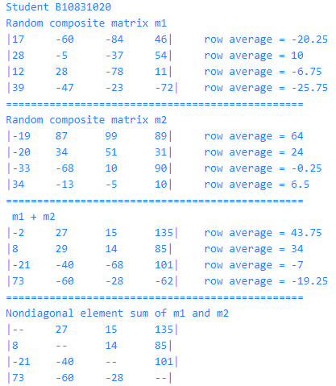
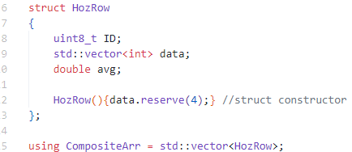
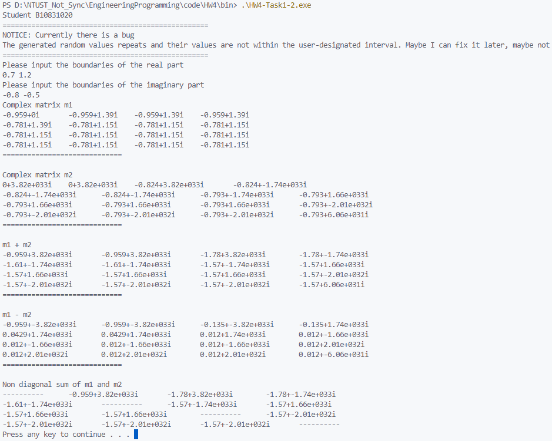
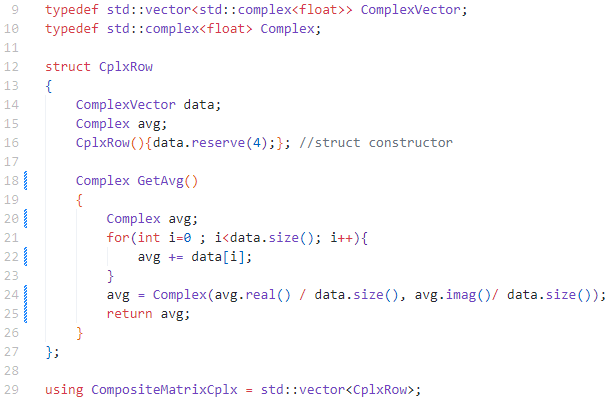

| 班級 | 姓名 | 學號 | 日期 |
|---|---|---|---|
| 四機械四乙 | 吳宇昕 | B10831020 | 10/29/2022 |
sorce code and replit
執行結果如下圖:

Struct的定義如下圖：

將HozRow當作struct vector的一列。自定義HozRow的constructor，當vector需要加入新的一列，會呼叫此constructor執行reserve函式，為此列預留記憶體空間。
寫這次的作業發現vector很有趣的一個現象。以下是為陣列賦值的函式，它會加長兩個陣列的行列數，並賦予亂數值。
void assignRandomValue(CompositeArr& m1, CompositeArr& m2)
{
auto randGenerator = std::mt19937(time(0));
m1.reserve(4);
m2.reserve(4);
for(int i = 0; i < 4; i++){
m1.push_back(HozRow()); //calls HozRow constructor
m2.push_back(HozRow()); //calls HozRow constructor
for(int j = 0; j < 4; j++){
m1[i].data.push_back(randGenerator() % 200 - 100);
m2[i].data.push_back(randGenerator() % 200 - 100);
}
}
getRowAvg(m1);
getRowAvg(m2);
}
若將
m1[i].data.push_back(randGenerator() % 200 -100);
改為
m1[i].data[j] = randGenerator() % 200 -100;
程式依然可以執行，不會發生segmentation fault，且後續用m1[i].data[j]索引第i列j行的元素值可以順利取值。然而，若用m1.size()查詢其內容物數量，會發現是0。
雖然vector經過reserve()已經配置空間可以容納新元素，仍應該用push_back()使其增長，而不是像上述用等號的寫法直接寫入記憶體空間。不然即使順利對vector寫入數值，它不會知道自己真實內容物量為何。如此逾越vector管理自身長度的設計，恐怕是相當糟糕的寫法。過去有一份作業是這樣寫的，很高興這次有發現此缺失。
目前這份code有嚴重的執行期錯誤
sorce code and replit
執行結果如下圖（執行期錯誤）:

程式有明顯的錯誤，但是經過長時間的debug仍然看不出為什麼會這樣。
以圖片輸出為例，使用者以浮點數輸入實數與虛數上下界，但是產生的亂數即使經過處理沒有落在指定範圍內，反而變成很詭異的數值。還有，各個元素實部與虛部皆應是亂數，然而實際輸出看見好幾的元素的值是重複的。兩個問題經過長時間debug仍無法解決。
struct 定義如下圖：

自定義CplxRow的constructor與計算列平均的函式GetAvg()。計算平均的函式本來想寫成
Complex GetAvg()
{
Complex avg;
for(int i=0 ; i<data.size(); i++){
avg += data[i];
}
avg /= (int)data.size();
return avg;
}
卻發現/=運算子沒辦法在std::complex<float>與int之間使用。在cppreference.com網站上看到這句話
Because template argument deduction does not consider implicit conversions, these operators cannot be used for mixed integer/complex arithmetic. In all cases, the scalar must have the same type as the underlying type of the complex number.
顯然目前這兩種type之間的變數無法使用這個運算子，那就只好向圖片裡一樣寫得土炮一點。
這部影片主要介紹C++的class如何自訂義operator。其實operator似乎只是變形的函式，以更簡潔的符號形式進行相加、相減、比較等計算。
兩複數相加時，普通的class內函式可能長這樣
Complex Complex::add(const Complex& another)
{
return Complex(this->real() + this->real(), another.imag() + another.imag());
}
而呼叫此函示需寫成
Complex c1, c2, c3;
c3 = c1.add(c2); // assume = operator is already availabe
但是若在class Complex自訂義+運算子，兩個複數相加的程式將會看起來更簡潔
Complex Complex::operator + (const Complex anotherCplx) const
{
return Complex(this->real()+anotherCplx.real(), this->imag()+another.imag())
}
使用+運算子複數相加只需要
Complex c1, c2, c3;
c3 = c1 + c2; // assume = operator is already available
定義+運算子有幾個關鍵字，其實跟定義函式語法很類似：
Complex: 運算子(函式)的return type是Complex instanceComplex::operator +:修改Complex class的+運算子(const Complex anotherCplx): 此函式需要輸入兩個參數，不過第一個參數即呼叫此運算子時在+前的Complex instance，會暗中自動傳入不需要寫在參數列裡。上例中的c1即是第一個參數，被暗中傳入，即函式內文的this。而第二個參數被pass by const reference，即上例的c2，函式內文為anotherCplx。const: 此函式不會修改第一個參數物件c1內容我其實找不到該影片
Python讓使用者自由選擇是否使用OOP語法寫程式，不像C#或Java一定要求每個主程式要包覆在namespace、class裡面。
與其像C++在class裡使用public、private、protected等access modifiers，它以變數的名稱前面有幾個底線_判別各個attribute的accessibility。
兩個語言皆提供inhertance，但是python似乎不提供function overload。
Python class內的函式若需修改一個instance，該函式第一個參數必須傳入self。或在寒士名稱上標記@classmethod。若不修改instance而是單純把一個函式寫在class內，則可以標註@staticmethod。C++沒有這種機制，所有class內的函式無論是否修改instance都長一樣。
程式可以把變數存在兩種不同記憶體，stack或是heap。
| 特性 | Stack | Heap |
|---|---|---|
| 自動清除變數 | 有 | 無 |
| CPU效率 | 較高 | 較低 |
| 可用空間 | 較小 | 較大 |
C++與C若宣告變數時沒有特地使用new關鍵字，該變數就會存在stack裡；反之，就會存在heap。除非需要回傳一條在函式裡創建的array，或是程式需要儲存體積龐大的物件，將變數儲存在stack上應該是較好的選擇。
由於heap裡的物件不會在function call結束或scpoe結束時被清除，很容易產生memory leak霸佔電腦的記憶體空間。同時，stack記憶體裡所有變數儲存位置相鄰，heap可能儲存在任何凌亂的位置，CPU對某個stack位置取值計算更有效率。
即使我們寫的作業幾乎不需要用到new關鍵字，不需要手動操作heap記憶體，其實四次作業都有用到vector就是在讀寫heap記憶體。由於vector長度不固定，其必須被儲存在heap才有這樣的靈活度，因此vector設計上一律儲存在heap。但是為了避免memory leak，它同時也被設計當它go out-of-scope，會自動call destructor，清除相關的heap記憶體內容。